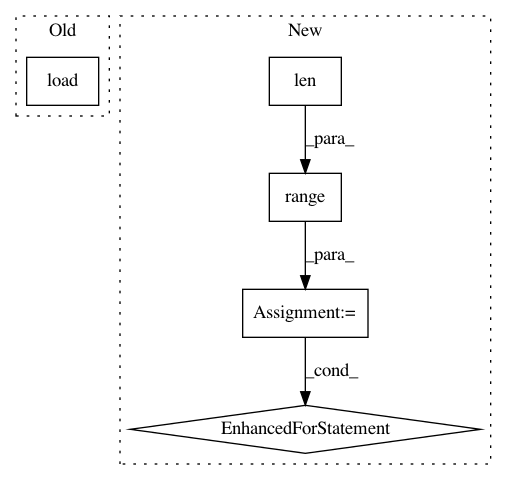

5cd8f0e4aa0a74122eed266dbf1f657dc833366b,torch_geometric/datasets/dataset.py,Dataset,_process,#Dataset#,82
Before Change
def _process(self):
filename = self._processed_file
if exists(filename):
self.datas = torch.load(filename)
return
self.datas = self.process()
torch.save(to_list(self.datas), filename)
After Change
sets = sets if isinstance(sets, tuple) else (sets, )
// Save training and test set separately.
for i in range(len(self._processed_files)):
torch.save(to_list(sets[i]), self._processed_files[i])
In pattern: SUPERPATTERN
Frequency: 3
Non-data size: 5
Instances
Project Name: rusty1s/pytorch_geometric
Commit Name: 5cd8f0e4aa0a74122eed266dbf1f657dc833366b
Time: 2018-02-04
Author: matthias.fey@tu-dortmund.de
File Name: torch_geometric/datasets/dataset.py
Class Name: Dataset
Method Name: _process
Project Name: interactiveaudiolab/nussl
Commit Name: c45d42e03c5bc793c9a17b7176d4d985d7980eaa
Time: 2017-08-10
Author: daniel.felixkim@gmail.com
File Name: tests/test_duet.py
Class Name: DuetUnitTests
Method Name: test_compute_masks
Project Name: interactiveaudiolab/nussl
Commit Name: c45d42e03c5bc793c9a17b7176d4d985d7980eaa
Time: 2017-08-10
Author: daniel.felixkim@gmail.com
File Name: tests/test_duet.py
Class Name: DuetUnitTests
Method Name: test_duet_final_outputs